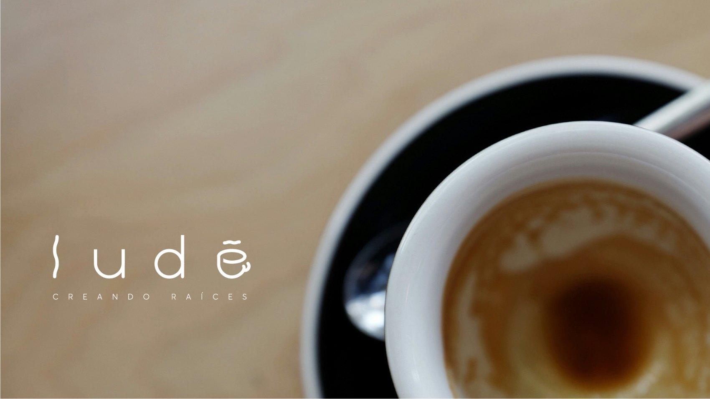
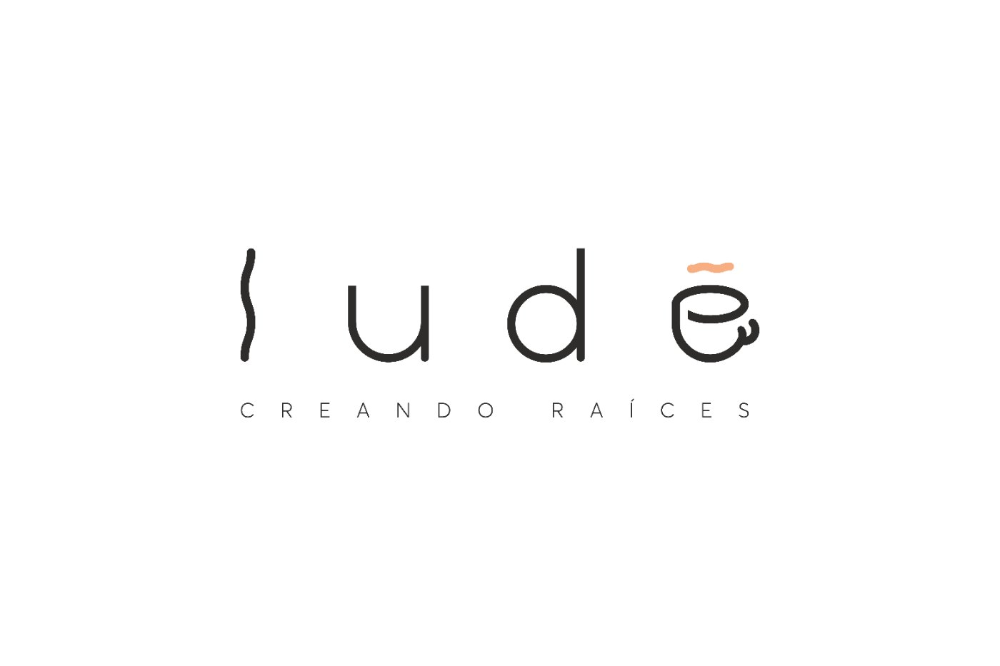
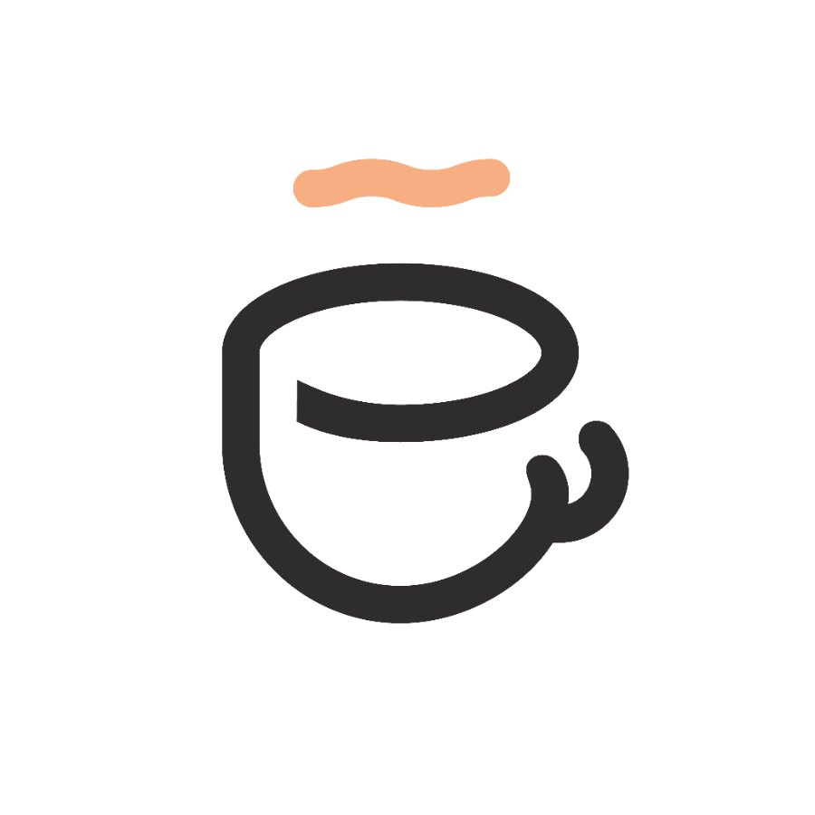
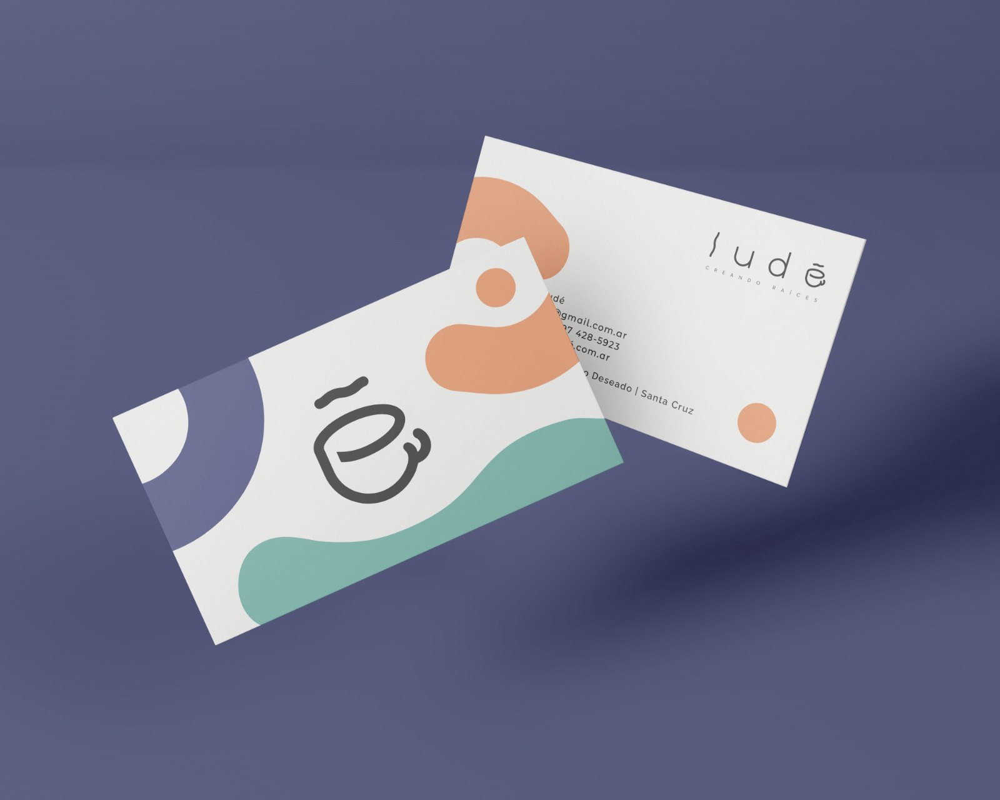
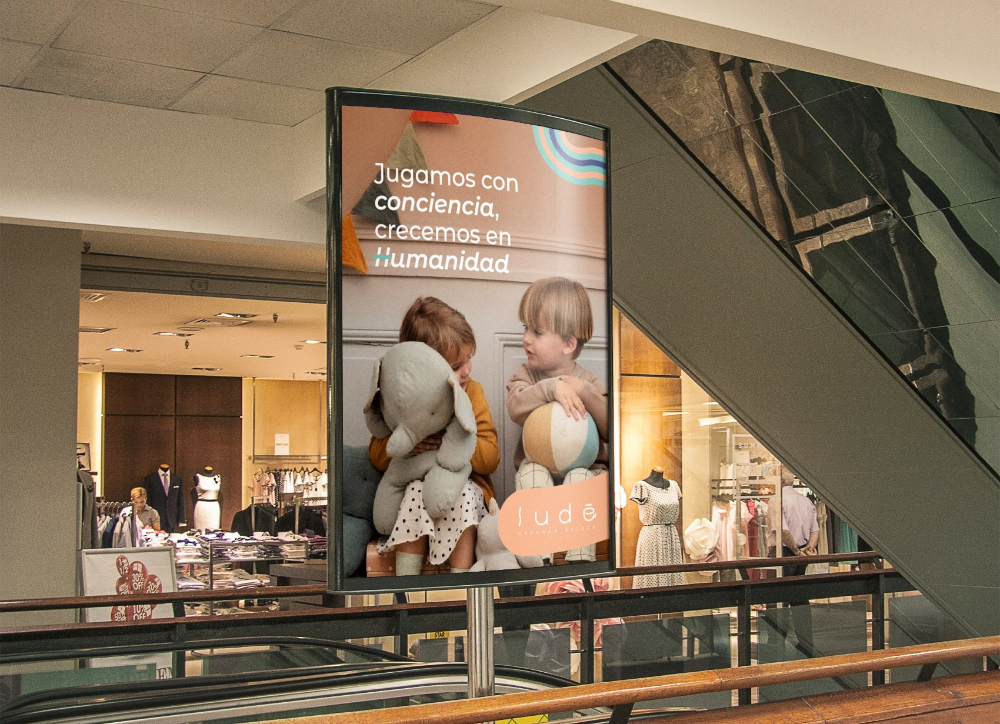
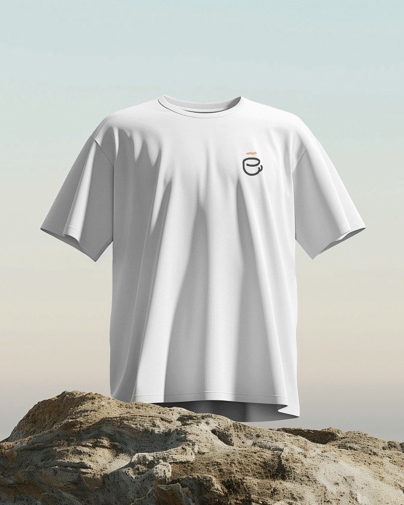
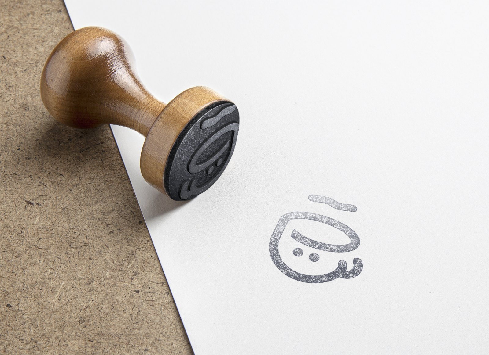
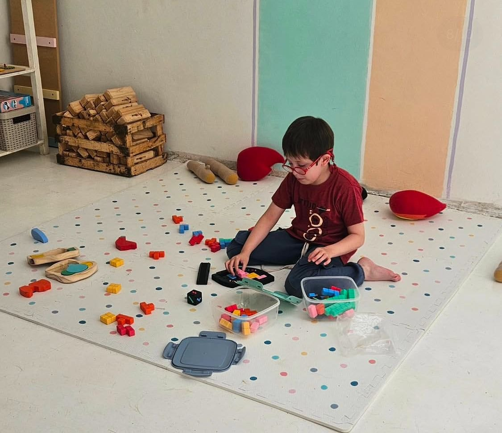
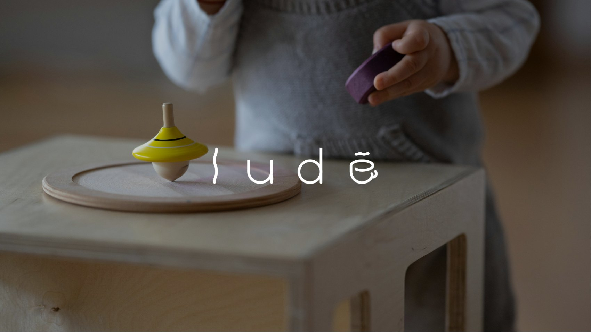

Ludé
A brand born from a blank page: a free-play and café space where families grow roots.

Free play & café · Puerto Deseado, Santa Cruz
with Nicole Irrgang & Lucía Domínguez
From idea to pre-launch
55-page brandbook
There was no old brand to fix. There was nothing. Just an idea in the head of a Patagonian entrepreneur.
In Puerto Deseado, Santa Cruz, a client wanted to open something her city didn't have: a space where kids play freely —away from screens— while adults enjoy a good coffee. The request was straight to the point: the complete development of the brand, from scratch.
Lucía put the team together and brought me in along with Nicole. We split by areas with shared direction: Nicole led concept and marketing, Lucía palettes, photography and strategy. I took the base identity design — and the logotype the client chose was one of my ideas.
When the page is blank, the risk isn't falling short — it's flying off into the clouds.
The hardest tension was internal: with total freedom, the team drifted toward concepts the business would never be able to sustain. More than once we had to hit the brakes and go back to the center: Ludé is coffee and play. Period. That discipline defined everything that followed.
The second tension was a design one: a single logotype had to speak to two audiences at once — the adult sophistication of coffee and the playful energy of childhood — without splitting in two.
The answer is hidden in the letters: the E is a coffee cup, and the accent is its steam.


The construction is designed to convey elegance and simplicity. Characters were replaced with moving elements to communicate the connection between play, the café service and family.
Letter by letter: movement in the first l, rounded shapes for childhood, sans-serif stroke starts that represent adulthood, the accent turned into steam and the E transformed into a coffee cup.
It opens up and becomes a cup seen in profile. Coffee stops being a detail of the industry and becomes the letter.
It stops being a tilde and becomes the steam rising from the cup. One single stroke does two jobs at once.
Straight sans-serif lines for adulthood, rounded shapes for childhood. Both audiences live in the same word.
A 55-page brandbook that doesn't describe pieces: it leaves the brand ready to operate without us.
The promise, written in the manual: to be the play space valued by families, with an environment safe physically and emotionally, and free play as an essential form of development and learning. When a family walks into Ludé, they should feel the place is warm, fun, energetic, professional, transparent and friendly.
Purpose, promise, tone, communication territories, misuse rules, photographic style and applications — from the business card to outdoor advertising, from cups to apparel. Everything specified so anyone can keep it consistent.




From idea to open store.
Ludé opened its doors in Puerto Deseado. The palette on the walls, the logotype on the toys, warmth in every corner — the brand left the page and became a place.



The proposal was accepted immediately — the client was delighted and shared with us the whole preparation and pre-launch process.
Ludé exists and works: its first branch is open, and the identity is reflected in how the space was implemented.
A brand that started as an idea without a name now has purpose, system, brandbook — and a place where families grow roots.
I learned that total freedom is not the gift it seems.
With a blank page, the hardest work wasn't proposing: it was reining in the team and bringing everything back to what the business could sustain.
Are you about to open something that has no name or brand yet?
Ludé started on a blank page and ended up as a 55-page brandbook and an open store. The blank page is where getting in early pays off most.